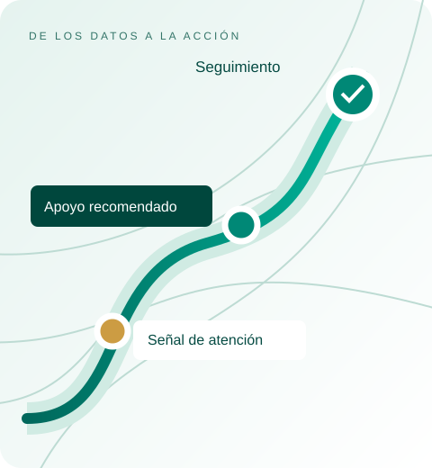

Comprender y descubrir
Relacionar asistencia, desempeño y trayectoria para reconocer señales que pueden pasar desapercibidas en reportes separados.
Portafolio de datos y analítica
Ocho casos de uso para fortalecer la permanencia, la recuperación académica y la conclusión de estudios. Información que ayuda al Colegio a identificar necesidades, orientar apoyos y dar seguimiento a los resultados.

Recomendaciones para apoyar las decisiones del equipo académico.
01 — Propósito
Fortalecer la capacidad del Colegio para acompañar cada trayectoria, desde el ingreso hasta el siguiente paso educativo o laboral.
CADA TRAYECTORIA CUENTA
Reconocer dificultades a tiempo, orientar apoyos y recuperar aprendizajes.
Continuidad y recuperación académicaAcompañar la regularización, el cumplimiento de requisitos y la certificación.
Egreso con seguimientoFortalecer la orientación hacia la educación superior y el ámbito laboral.
Vinculación y seguimiento de egresadosInformación confiable para coordinar apoyos, planear recursos, agilizar trámites y dar seguimiento a los resultados.
02 — Enfoque analítico
Conectar los datos del Colegio para descubrir patrones poco evidentes, anticipar necesidades y recomendar acciones que los equipos puedan llevar a la práctica.
Relacionar asistencia, desempeño y trayectoria para reconocer señales que pueden pasar desapercibidas en reportes separados.
Estimar riesgos y necesidades, y comparar qué podría ocurrir bajo distintas condiciones.
Priorizar apoyos y proponer acciones considerando criterios académicos y recursos disponibles.
El valor está en convertir los hallazgos en acciones y aprender de sus resultados.
03 — Punto de partida
Los ocho casos ofrecen distintas oportunidades para el Colegio. El punto de partida se define combinando la relevancia de la necesidad, la información disponible y la capacidad de convertir los hallazgos en acciones.
¿Qué problema requiere atención prioritaria y a quién beneficiaría resolverlo?
Identificar el resultado que se busca mejorar: permanencia, recuperación, conclusión o atención a la comunidad.
¿Con qué datos contamos para abordar el problema?
Valorar su cobertura, calidad y oportunidad, así como la posibilidad de relacionarlos.
¿Quién atenderá los hallazgos y qué acciones podrá realizar?
Considerar responsables, servicios, recursos y tiempos de respuesta.
¿Cómo sabremos si la solución aporta valor?
Definir una situación inicial e indicadores para evaluar su utilidad y orientar los siguientes pasos.
El resultado: un primer caso con alcance claro, responsables e indicadores, y una ruta de ampliación acordada con el Colegio. Abrir el compendio
04 — Compendio de casos
Detectar necesidades, orientar apoyos y fortalecer las decisiones del Colegio.
Secuencia sugerida, ajustable con el Colegio durante el diagnóstico.
CU-01 / Detección temprana y prevención del abandono escolar
Relacionar datos de la trayectoria estudiantil para identificar riesgos, recomendar apoyos y dar seguimiento a cada intervención.
Las señales de desvinculación pueden quedar dispersas entre asistencia, desempeño y seguimiento escolar. Cuando se reúnen tarde, el margen para ofrecer apoyo se reduce.
A quién contactar, qué necesidad confirmar y qué apoyo disponible acordar. Cada estudiante cuenta con un responsable, una próxima acción y evidencia de seguimiento.
02 / De los datos a la acción
Asistencia o avance, desempeño, inscripción y apoyos previos.
Relacionar cambios de asistencia, desempeño y trayectoria para descubrir patrones que una cifra aislada no muestra.
Proponer apoyos según la necesidad confirmada, los criterios académicos, las preferencias y los cupos disponibles.
Asignar responsable, registrar la atención y revisar continuidad.
La analítica predictiva se valida con periodos futuros y se compara con reglas simples. La recomendación prescriptiva propone una acción viable; el equipo académico la revisa y acuerda con el estudiante.
03 / Qué cuidar
Ejemplo ilustrativo · No representa un estudiante real ni un resultado observado.
Se observa una combinación de inasistencias recientes y materias pendientes.
El tutor confirma la captura, revisa la trayectoria y contacta al estudiante para conocer su situación.
Si se confirma una dificultad académica, se propone una asesoría disponible y una fecha de seguimiento.
Se registra la atención y se comprueba la participación posterior; el plan se ajusta si la dificultad persiste.
Una alerta pide revisión: no es un diagnóstico ni una etiqueta permanente. Se distingue ausencia de clases de ausencia de captura, y no se infiere la causa a partir del domicilio.
El retorno se respalda con una actividad o un estatus definido. Un aviso enviado no equivale a contacto logrado ni a reincorporación.
04 / Información y capacidades
Inscripción, modalidad, calificaciones, asistencia o avance, materias pendientes, contactos autorizados y registro de apoyos.
Tutor responsable, criterios de alerta, protocolo de contacto y capacidad real de atención y canalización.
Información territorial y de accesibilidad para comprender el entorno, sin atribuir características de una zona a cada estudiante.
Datos integrados, reglas y expediente compartido con tutorías. Si se acuerda Databricks, se propone procesamiento por lotes, gobierno de datos y modelos versionados. Su incorporación depende de la validación local.
05 / Resultados y evaluación
Contacto efectivo y tiempo de primera atención. Diferenciar un aviso enviado de una conversación lograda.
Retorno confirmado mediante una actividad o un estado institucional definido.
Participación posterior, reinscripción y seguimiento de la trayectoria en los periodos acordados.
Medir cuántos casos relevantes se identifican con anticipación dentro de la capacidad real de atención. Comparar modelos y reglas con la misma población y horizonte.
Se evalúan por separado la calidad de las señales, la atención recibida y la continuidad. Los antecedentes de investigación orientan el diseño; sus resultados no se transfieren automáticamente al Colegio. [P01] [P02] [P07]
06 / Puesta en marcha
Acordar población, periodo, responsables y servicios de apoyo.
Validar señales, fuentes, permisos y criterios de atención.
Contactar, acordar apoyos y registrar cada transición.
Revisar utilidad, atención y continuidad antes de ampliar.
Si solo hay calificaciones finales, el alcance inicial se concentra en análisis retrospectivo y seguimiento de reinscripción. Las alertas durante el semestre requieren información oportuna.
01 / Visión
Recuperación académica y reducción de la reprobación.
Las asesorías pueden ofrecerse sin identificar suficientemente qué dificultades deben atender o qué alumnos requieren cada apoyo.
Mapa de dificultades por asignatura, lista de alumnos que requieren apoyo y seguimiento de recuperación. El diagnóstico por tema depende de evaluaciones con ese detalle. Una calificación global no permite inferirlo de forma confiable.
02 / De los datos a la acción
03 / Qué cuidar
La ruta individual incluye materia, dificultad identificada, mecanismo aplicable, requisitos, fechas, asesoría y resultado. El refrendo publicado por el Colegio federal es un ejemplo de reglas que dependen del periodo y la situación académica [F10]. Cada organismo valida sus propios mecanismos.
Los materiales se catalogan por plan, tema, formato, accesibilidad, responsable y versión. Se recomiendan primero los revisados por docentes y se detectan vacíos antes de generar nuevos.
Analizar instrumentos de evaluación es opcional y requiere respuestas por reactivo y especialistas. La convocatoria EXACER 2026 documenta actividad de construcción de materiales [F18], pero no acredita acceso al banco ni justifica sustituir la revisión técnica. Los reactivos reservados se separan de los materiales abiertos.
04 / Información y capacidades
Plan y generación, calificaciones, evaluaciones por tema cuando existan, opciones y fechas de recuperación, asesorías y resultados.
Docentes responsables, materiales alineados al programa y oferta real de asesorías.
Catálogo institucional de materiales —Huella Digital como ejemplo [F12]—, recursos de SEP, universidades y SECIHTI validados por docentes, y actividad educativa autorizada.
Analítica académica, diagnóstico por tema y recomendador de recursos. La inteligencia artificial generativa es opcional y exige revisión docente.
05 / Resultados y evaluación
Comparar evaluaciones equivalentes, participación y recuperación. Evitar atribuir a la herramienta mejoras que puedan explicarse por cambios de evaluación o por la composición de los grupos.
Ver evaluación de resultados ↗06 / Puesta en marcha
Hace falta una oferta real de asesorías y materiales vinculados al programa. Los contenidos generados por inteligencia artificial requieren revisión docente antes de usarse.
01 / Visión
Conclusión de estudios y certificación.
Alumnos cercanos a concluir pueden acumular pendientes sin una vista clara de lo que falta y de quién debe resolverlo.
Expediente de pendientes por alumno y tablero de avance con fechas y responsables.
02 / De los datos a la acción
03 / Qué cuidar
Probar expedientes de planes distintos y situaciones de excepción. La ruta de cierre muestra qué falta, quién puede resolverlo y la fecha pertinente, sin prometer elegibilidad o emisión automática.
Los pendientes se separan en académicos, documentales y administrativos, y cada requisito se vincula con plan, modalidad, periodo y versión. Las referencias públicas a planes 2023 y 2025 refuerzan esa diferencia [F11].
La resolución institucional de equivalencias o portabilidad se registra cuando aplique, sin automatizar su aprobación. Se conservan origen, destino, documento de respaldo y responsable de validación.
04 / Información y capacidades
Historial por plan, créditos o materias, equivalencias autorizadas, modalidad, documentos, requisitos versionados y estatus de certificación.
Control escolar responsable y coordinación para resolver pendientes.
Calendarios oficiales de educación superior para fechas relevantes y correo autorizado para requerimientos. El enriquecimiento externo es secundario.
Reglas de requisitos, gestión de expedientes y tareas, avisos y tablero.
05 / Resultados y evaluación
Contrastar una muestra con control escolar y separar tres estados: cumplimiento académico, egreso reconocido y certificado emitido. La herramienta no expide certificados ni sustituye la validación institucional.
Ver evaluación de resultados ↗06 / Puesta en marcha
Hacen falta requisitos por plan de estudios y un tratamiento explícito de equivalencias, excepciones y cambios de plan.
01 / Visión
Seguimiento de tutorías y apoyos.
La atención puede quedar distribuida en archivos y agendas, sin continuidad ni visibilidad sobre casos sin resolver.
Registro compartido con permisos por función, agenda, acuerdos y pendientes.
02 / De los datos a la acción
03 / Qué cuidar
Conviene un mismo registro de atención. CU-01 identifica necesidades y CU-04 administra el acompañamiento. Evitar dos sistemas de casos. El cierre administrativo no equivale por sí solo a una mejora educativa.
Una canalización tiene responsable, fecha, estado y próxima acción. Se verifica recepción y atención, no solo el envío. Se diferencian apoyo académico, acompañamiento y canalización especializada, y se identifican barreras de acceso, horarios y capacidad del servicio.
No se infieren diagnósticos de salud mental mediante notas, asistencia o actividad digital. El antecedente público de tutorías [F13] debe contrastarse con la organización actual del Colegio. El catálogo se adapta a los servicios que cada Colegio tiene disponibles.
04 / Información y capacidades
Motivo de atención, responsable, sesiones, acuerdos, canalizaciones, fechas y estatus.
Catálogo de apoyos, responsables y acceso restringido a información sensible.
Directorios y recursos institucionales —Visible(mente) y El ABC de las emociones como ejemplos [F14] [F15]—, calendario y correo autorizados, y encuestas propias.
Gestión de casos y canalizaciones, agenda, recordatorios y analítica de resultados.
05 / Resultados y evaluación
Los casos deben seguirse de principio a fin y cada usuario ve únicamente lo necesario para su función.
Ver evaluación de resultados ↗06 / Puesta en marcha
Se registra solo la información necesaria para la gestión. Las notas clínicas o los detalles sensibles no entran al tablero general.
01 / Visión
Información confiable para la dirección.
Diferentes áreas pueden producir cifras incompatibles o dedicar demasiado tiempo a conciliarlas.
Tablero de un conjunto acotado de indicadores, cada uno con definición, fuente, fecha de corte y responsable.
02 / De los datos a la acción
03 / Qué cuidar
Cada indicador lleva fórmula, población, versión, modalidad, fecha de corte y responsable, además de metas y acciones correctivas acordadas. Las estadísticas oficiales son referencia metodológica, no línea base de otro Colegio [F4].
Se concilian totales y desgloses, se documentan revisiones de cifras y se separan indicadores educativos oficiales, métricas operativas del piloto y resultados de intervenciones. Un objetivo publicado no acredita que su sistema de información exista, funcione o requiera reemplazo.
04 / Información y capacidades
Matrícula, asistencia, calificaciones, bajas, egreso, certificación, docentes y recursos, según el alcance acordado.
Responsables de datos, definiciones comunes y calendario de actualización.
SEP y estadísticas oficiales como referencia educativa. INEGI y datos abiertos para contexto demográfico y territorial, con definiciones comparables.
Integración y calidad de datos, repositorio analítico, indicadores versionados, tableros y seguimiento de acciones.
05 / Resultados y evaluación
Conciliar con reportes institucionales y documentar diferencias antes de publicar. Las comparaciones entre planteles consideran población, modalidad y periodo. No se usan rankings descontextualizados.
Ver evaluación de resultados ↗06 / Puesta en marcha
Hacen falta identificadores consistentes y reglas para duplicados, transferencias, bajas y cambios de plantel.
01 / Visión
Planeación de grupos, horarios y recursos.
La oferta y los horarios pueden no ajustarse a la demanda real o a las restricciones de docentes y espacios.
Escenarios comparables con demanda atendida, capacidad utilizada, conflictos y necesidades no cubiertas.
02 / De los datos a la acción
03 / Qué cuidar
No se asignan sesiones a recursos fuera de servicio. Se explican los conflictos y se proponen escenarios factibles. La capacidad nominal se distingue de la capacidad efectiva: un laboratorio en inventario puede estar indisponible por mantenimiento, falta de equipo o restricción de horario.
De cada recurso se registran ubicación, condición, capacidad, fechas de indisponibilidad, causa, restricción de uso y grupos afectados, además de accesibilidad y requerimientos de práctica cuando correspondan. El catálogo público de bienes 2026 ilustra fuentes a solicitar [F17]; sus listados no verifican la condición operativa. La gestión integral de mantenimiento es una ampliación distinta.
04 / Información y capacidades
Matrícula por plan, materias pendientes, cupos, horarios, especialidad docente, espacios, equipos, condición operativa, fallas y restricciones.
Reglas académicas y laborales, inventario actualizado y validación de las propuestas.
INEGI para población en edad escolar, ingreso oficial disponible para la demanda, y transporte y ubicación de escuelas para la accesibilidad.
Pronóstico de demanda, optimización matemática, simulación de escenarios y, de forma opcional, análisis geográfico.
05 / Resultados y evaluación
Detectar cruces de horario, sobrecupos y asignaciones incompatibles. Si no hay solución factible, explicar las restricciones que impiden cubrir la demanda, en lugar de producir una asignación aparentemente válida.
Ver evaluación de resultados ↗06 / Puesta en marcha
Hay que distinguir restricciones obligatorias de preferencias. Los escenarios respetan las reglas académicas y laborales confirmadas por el Colegio.
01 / Visión
Atención y trámites escolares.
Consultas repetitivas, requisitos poco claros y expedientes incompletos incrementan el trabajo administrativo.
Catálogo validado de consultas y trámites, seguimiento de solicitudes y acceso a atención humana.
02 / De los datos a la acción
03 / Qué cuidar
Probar preguntas para periodos y planes distintos. Si dos fuentes se contradicen o no hay versión aprobada, la consulta se canaliza al área responsable. Se muestran fuente y fecha, y se distinguen orientación, solicitud presentada y trámite concluido.
La biblioteca de procedimientos registra organismo, trámite, modalidad, plan, población y vigencia. La fecha de una página de catálogo no prueba la vigencia de cada documento enlazado [F19]. Los enlaces públicos a sistemas y certificados no prueban que exista una interfaz de integración [F20].
04 / Información y capacidades
Procedimientos aprobados, versiones, vigencias, población aplicable, formatos, calendarios, solicitudes y estatus.
Responsable de vigencia, validación de identidad, integración con servicios existentes y canal humano.
Correo institucional autorizado para solicitudes, repositorio autorizado para documentos vigentes y portales oficiales para convocatorias. Gmail y Drive son opciones si forman parte de la operación, no requisitos.
Portal y sistema de solicitudes, flujos automatizados y asistente con documentos oficiales y fuentes. La lectura automática de documentos se usa cuando aporte valor.
05 / Resultados y evaluación
Probar consultas frecuentes, ambiguas, sin respuesta, con documentación vencida y con intentos de acceso a expedientes ajenos. La lectura automática no acredita autenticidad.
Ver evaluación de resultados ↗06 / Puesta en marcha
El asistente utiliza documentos aprobados, muestra sus fuentes y reconoce cuando no puede responder. Las consultas de estatus personal requieren identificación y permisos.
01 / Visión
Seguimiento de egresados.
La falta de seguimiento dificulta conocer trayectorias y orientar acciones de vinculación.
Registro por generación, encuesta breve y tablero que distinga población total, contactada y participante.
02 / De los datos a la acción
03 / Qué cuidar
Se conservan instrumento, versión, fecha y procedencia de cada respuesta. Se reportan población total, localizable, invitada y participante. Los resultados educativos y laborales se presentan junto con la cobertura y los sesgos.
Conviene revisar cuestionarios e históricos antes de crear otros. El estudio público de trayectorias es un antecedente, no una confirmación de operación actual [F21]. Postulación, admisión, inscripción y continuidad son hechos separados. En empleo se distinguen interés, búsqueda y ocupación reportada. No se infieren trayectorias individuales a partir de estadísticas agregadas.
04 / Información y capacidades
Generación, plan, plantel, contacto autorizado, instrumentos previos, intereses, postulaciones y estudios o empleo reportados con fecha.
Responsable de vinculación, estrategia de contacto y acuerdos para intercambios individuales.
INEGI–ENOE y Observatorio Laboral para tendencias [F8]. DENUE para empresas cercanas [F7]. Universidades para oferta y convocatorias. SECIHTI para oportunidades pertinentes. Correo autorizado para el seguimiento.
Registro de egresados, encuestas periódicas, tableros y análisis territorial y laboral.
05 / Resultados y evaluación
Mostrar tasas de respuesta y posibles sesgos. Quienes contestan no representan automáticamente a todos los egresados. El DENUE identifica establecimientos, no vacantes ni relaciones laborales individuales.
Ver evaluación de resultados ↗06 / Puesta en marcha
Hacen falta canales de contacto autorizados y una estrategia que motive la respuesta. No se presupone acceso a bases individuales de universidades, seguridad social o empleadores.
05 — Datos
La información del Colegio es el punto de partida. El contexto complementario amplía la mirada para orientar decisiones y apoyos.
01 / Información institucional
Una visión integrada
Información conectada por estudiante, plantel y periodo, con historia y trazabilidad.
02 / Contexto complementario
06 — Diseño técnico
Conectar información, convertirla en decisiones y acompañar su ejecución. Una arquitectura que aprovecha las capacidades existentes del Colegio.
Reunir y dar estructura.
Reconocer y recomendar.
Atender y aprender.
Permisos, trazabilidad de cambios y actualización a lo largo de todo el flujo.
Reglas por organismo, modalidad, plan y periodo; componentes compartidos para evitar duplicidad.
07 — Gobierno y cuidado
Condiciones de diseño para que los datos y los agentes apoyen al equipo académico con accesos y usos delimitados.
Minimizar la exposición.
Usar solo la información necesaria y separar identificadores cuando sea posible. Demostrar con datos ficticios o agregados; acordar conservación y eliminación antes del piloto.
Autorizar y dejar huella.
Definir repositorios, campos y periodos accesibles. Restringir consultas por función y registrar acciones. Los tableros generales no exponen expedientes sensibles.
Acompañar la decisión.
Las recomendaciones apoyan la revisión académica y profesional. El envío de información sensible a servicios externos de IA requiere una decisión institucional específica.
08 — Gobierno de datos · Trébola
Desarrollamos capacidades de Gobierno de Datos para que la institución pueda conocer, organizar y gestionar su información, articulando gente, procesos y tecnología.
Evaluamos capacidades y madurez con entrevistas, revisión documental y evidencia técnica.
Una línea base para priorizar acciones.
Trabajamos con las áreas para acordar definiciones, modelar procesos y diseñar reglas y controles.
Instrumentos y responsabilidades compartidas.
Entregamos capacitación y una ruta de implementación con indicadores para evaluar el uso y la evolución.
Capacidades para sostener la práctica.
09 — Impacto
Tres dimensiones para evaluar el valor: la atención que se brinda, la trayectoria estudiantil y la capacidad de gestión.
Llegar a tiempo.
Acompañar el avance.
Resolver mejor.
10 — Ruta de trabajo
Problema, usuarios, decisiones y responsables.
Fuentes, calidad, accesos y limitaciones.
Población, flujo, línea base y criterios de aceptación.
Integración, pruebas, permisos y capacitación.
Atención de casos, adopción y resultados.
Incorporar mejoras y ampliar capacidades, cobertura y casos de uso a partir de lo aprendido.
Coordinación de responsables · Gestión del alcance y los cambios · Seguimiento de avances · Calidad y validación
11 — Aceptación del piloto
La aceptación reúne evidencia técnica, experiencia de los usuarios y condiciones para sostener la operación.
Confianza en la información.
Fuentes y reglas documentadas, resultados conciliados y señales con motivo y fecha. Indicadores reproducibles con población y corte definidos.
Del hallazgo a la atención.
Usuarios capaces de ejecutar y registrar el flujo, permisos probados y responsables de actualización y soporte identificados.
Una decisión compartida.
Revisión con los usuarios de la utilidad del piloto y sus resultados. Acuerdo explícito sobre ajustes, continuidad o ampliación.
12 — Equipo y responsabilidades
El Colegio y el equipo del proyecto acuerdan prioridades, construyen soluciones y evalúan resultados juntos, con responsabilidades claras en cada etapa.
Acompañar cada trayectoria estudiantil
Patrocinador institucional · Prioridades, coordinación y alcance.
Área académica y control escolar · Criterios educativos, requisitos y estados escolares.
Tutorías y orientación · Atención, registro de acciones y utilidad de las alertas.
Equipo del proyecto · Diseño, implementación, documentación y transferencia.
TI y responsables de datos · Fuentes, integraciones, permisos y operación técnica.
Protección de datos · Tratamiento, acceso y conservación de información.
13 — Referencias
29 referencias para comprender el contexto, conectar información y fundamentar las decisiones de diseño.
14 — Director del proyecto